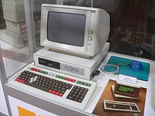
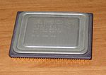

l'histoire de l'ordinateur, les origines à aujourd'hui
l'origine des ordinateurs
Les debut de l'ordinateur commence au milieu du XXe siècle, après la 2nd guerre mondiale et durant la
guerre froide.
Leurs conceptions reposent sur le resultat de plusieurs prototypes comme l'Harvard Mark
1* et le Z3*
qui font partis des premiers grand calculateur et aussi ils reposent sur deux calculateurs électroniques
dont: le Colossus*
du sevice de cryptanalyse Britanique en 1943 et l'ENIAC* en 1945

*Harvard Mark 1: l'IBM ASCC (AUTOMATIC SEQUENCE CONTROLLED CALCULATOR)
A été le premier grand calculateur numérique construit aux Etats Unis par Howard Aiken.
*Z3: Etait un calculateur à relais électromécaniques conçu par l'ingenieur Allemand Kontad Zuse.
*Colossus: Aussi appelé Colossus Mark 1 est une série de calculateurs électroniques fondé sur le
système binaire créé par Tommy Flowers...
*l'ENIAC: est en 1945 le premier ordinateur entièrement électronique pouvant être
Turing-complet. il à été créé par
John Presper Eckert et John William Mauchly.
la Première génération d'ordinateurs (1936-1956)
 En 1936, la publication de l'article fondateur de la science informatique On Computable Numbers,
with an Application to the Entscheidungsproblem par Alan Mathison Turing allait donner le coup
d'envoi à
la création de l'ordinateur programmable.
Il y présente sa machine de Turing, le premier calculateur universel programmable, et invente les
concepts de programmation et de programme.
En 1936, la publication de l'article fondateur de la science informatique On Computable Numbers,
with an Application to the Entscheidungsproblem par Alan Mathison Turing allait donner le coup
d'envoi à
la création de l'ordinateur programmable.
Il y présente sa machine de Turing, le premier calculateur universel programmable, et invente les
concepts de programmation et de programme.
En février 1951, le premier modèle de Ferranti Mark I, version commerciale du Manchester Mark I et
premier ordinateur commercial de l’histoire, est vendu. Il s’en vendra 9 jusqu’en 1957.
Quatre mois plus tard, P. Eckert et J. Mauchly de Remington Rand commercialisèrent l’UNIVAC I.
Il exécutait 8 333 additions ou 555 multiplications par seconde. 46exemplaires furent vendus au
total, à plus d’un million de dollars l’unité
En avril 1952, IBM produit son premier ordinateur, l’IBM 701, pour la défense américaine.
Il effectuait 16 000 additions ou 2 200 multiplications par seconde. 19 machines seront installées
au total.
En juillet 1953, IBM lance l’IBM 650, ordinateur scientifique comme tous ceux des séries 600
Il était relativement lent. Environ 2 000 unités furent produites jusqu’en 1962.
Vers 1954, les mémoires magnétiques supplantèrent toute autre forme de stockage et étaient
dominantes au milieu des années 1970.
En avril 1955, IBM lance l’IBM 704, premier ordinateur commercial.
D’après IBM, le 704 pouvait exécuter 40 000 instructions par seconde.
123 machines seront vendues jusqu’en 1960.
La Deuxième génération (1957-1965)
 La deuxième génération d'ordinateurs est basée sur l'invention du transistor en 1947. Cela permit de
remplacer le fragile et encombrant tube électronique par un composant plus petit et fiable.
La deuxième génération d'ordinateurs est basée sur l'invention du transistor en 1947. Cela permit de
remplacer le fragile et encombrant tube électronique par un composant plus petit et fiable.
En 1956, IBM sortit le premier système à base de disque dur, le Ramac 305.
Il pouvait enregistrer cinq mégaoctets de données et coûtait 10 000 $ par mégaoctet.
Le premier langage de programmation universel de haut niveau à être implémenté, le Fortran,
fut aussi développé chez IBM sur la période 1954-1957 par l'équipe de John
Backus, prix Turing 1977
En 1958, la Compagnie des Machines Bull (France) annonce Le Gamma 60, livré en une quinzaine
d'exemplaires à partir de 1960 : Premier ordinateur multitâches dans le monde et l'un des premiers à
comporter plusieurs processeurs, cet ordinateur transistorisé présente cependant
de graves défauts de conception, typiques d'une machine expérimentale.
En 1959, IBM lança l'IBM 1401 (commercial), qui utilisait des cartes perforées. Il fut le premier
ordinateur vendu à plus de 10 000 exemplaires.
En 1960, IBM lança l'IBM 1620 (scientifique). 2 000 unités furent vendues.
Un exemplaire opérationnel fut longtemps présent au Palais de la découverte.
Troisième génération (1963-1971)
Premiers ordinateurs à circuits intégrés
La troisième génération d'ordinateurs est celle des ordinateurs à circuit intégré qui ont été
inventés par Jack Kilby en 1958. C'est à partir de cette date que l'utilisation de l'informatique a
explosé.
Les premiers ordinateurs utilisant les circuits intégrés sont apparus en 1963.
L'un de leurs premiers usages a été dans les systèmes embarqués, notamment par la NASA dans l'ordinateur
de guidage d'Apollo et par les militaires dans le missile balistique intercontinental LGM-30
À la même époque, Phillips (marque hollandaise de produits grand public) lance une série d'ordinateurs
du type « 360 » pour concurrencer IBM. Ils sont plus rapides et largement aussi fiables (c'est-à-dire
assez peu), mais comme ils utilisent un système d'exploitation spécifique, ils disparaissent rapidement
du marché. Siemens et Digital Equipment tentent de supplanter IBM sur ce créneau du « 360 » mais sans
grand succès. Seuls Control-Data et Cray réussissent à rivaliser avec les haut de gamme d'IBM dans les
années 1970-1980.
« Mini-ordinateurs », à partir de 1972

Le mini-ordinateur est une innovation des années 1970, qui devient significative vers la fin de
celles-ci. Il apporte la puissance de l'ordinateur à des structures décentralisées, non seulement grâce
à un encombrement plus commode, mais également en élargissant le nombre de constructeurs d'ordinateurs.
En 1969, Data General vend 50 000 ordinateurs Nova à 8 000 $ l'unité. Le Nova était dans les premiers
mini-ordinateurs 16 bits
Dans les années 1970, IBM a sorti une série de mini-ordinateurs. La première version du système
d'exploitation n'était qu'une évolution de celui du 38.
Le but était de ne conserver qu'un seul système d'exploitation pour l'ensemble de la gamme mini.
Dans les années 1980, DEC devint le deuxième fabricant d'ordinateurs derrière IBM avec un chiffre
d'affaires représentant le cinquième de celui-ci grâce à ses ordinateurs populaires surtout le
PDP-11 (1970-1993), première machine de DEC à utiliser des mémoires de 16 bits et non de 12, et machine
sur laquelle et pour laquelle fut développé le langage C et VAX, qui apportera le confort du système
VMS.
Quatrième génération (1971 à la fin des années 1980)
Une définition non universellement acceptée associe le terme de quatrième génération à l'invention du
microprocesseur par Marcian Hoff et Federico Faggin (physicien et inventeur italien, spécialisé en
physique du solide). En pratique et à la différence des autres changements de génération, celle-ci
constitua plus une évolution (presque passée inaperçue) qu'une révolution : les circuits s'étaient
miniaturisés de plus en plus depuis l'invention du circuit intégré.
Microprocesseurs

Le 15 novembre 1971, Intel dévoile le premier microprocesseur commercial, le 4004. Il a été développé
pour Busicom, un constructeur japonais. Un microprocesseur regroupe la plupart des composants de calcul
sur un seul circuit. Couplé à un autre produit, la puce mémoire, le microprocesseur permet une
diminution nouvelle des coûts. Le 4004 ne réalisait que 60 000 opérations par seconde, mais la puissance
de ses successeurs répondit à la loi de Moore.
Super-calculateurs
 En 1976, le Cray-1 fut développé par Seymour Cray, qui avait quitté Control Data en 1972 pour créer sa
propre société. C'était l'un des premiers ordinateurs à mettre en pratique le traitement vectoriel, qui
appliquait la même instruction à une série consécutive d'opérandes.
Le Cray-1 pouvait calculer 150 millions d'opérations à virgule flottante par seconde. 85
exemplaires furent vendus à cinq millions de dollars l'unité.
En 1976, le Cray-1 fut développé par Seymour Cray, qui avait quitté Control Data en 1972 pour créer sa
propre société. C'était l'un des premiers ordinateurs à mettre en pratique le traitement vectoriel, qui
appliquait la même instruction à une série consécutive d'opérandes.
Le Cray-1 pouvait calculer 150 millions d'opérations à virgule flottante par seconde. 85
exemplaires furent vendus à cinq millions de dollars l'unité.
Contrôleurs de communication
Eux aussi bénéficièrent de l'usage des microprocesseurs et l'on peut même dire que la généralisation des
réseaux informatiques n'a été possible que par l'invention des microprocesseurs. Les contrôleurs 3745
(IBM) utilisaient intensivement cette technologie. Dans le même temps, aux États-Unis, la compagnie AT&T
se rendit compte qu'avec tous ses standards téléphoniques interconnectés, elle se trouvait sans l'avoir
cherché disposer du plus grand réseau d'ordinateurs des États-Unis
Ordinateur personnel
En janvier 1973 est présenté le premier micro-ordinateur, le Micral conçu par François Gernelle de la
société R2E dirigée par André Truong Trong Thi. Basé sur le premier microprocesseur, l'Intel 8008 8
bits, ses performances en font le plus petit ordinateur moderne de l'époque correspondant à son prix : 8
500 francs.
Des années 1990 à aujourd'hui
Depuis les années 1990 l'informatique est continuel développement, toujours plus performant et rapides.
Des programeurs de genie sont sortit de terre tel que Mark Zuckerberg (programmeur de Facebook(créé en
2004)) ou encore Elon Musk(programeurs d'amazon(fondé en 1994)) et bien d'autre.